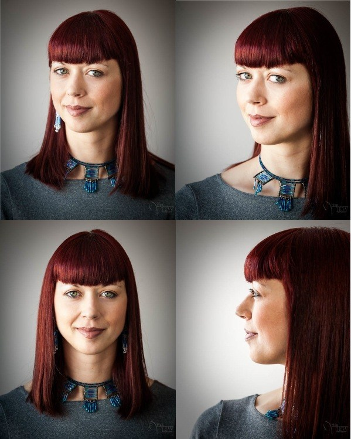

Paint me
I paint people at twitch.tv/asmrsehole, if you want me to paint you just follow these easy steps
First, follow me on twitch! I stream under asmrsehole several times a week mostly art related streams
Second, take a photo of yourself, try and get some good lighting, moving side onto a window will give some nice shadows. Consider your angel, you can shoot front on, 3/4, or a profile, you can see some examples below
Third, send an email though with the subject line "paint me" and your twitch username, you can include multiple images if unsure. Send your emails through to jakechrisbrown@gmail.com
Finally, come by the stream! unfortunately it's not reasonable for me to reach out to everyone that I am painting, the best way to not miss your painting is to turn on notifcations for my stream at twitch.tv/asmrsehole
The image below shows some common portrait angels, click through the image to learn more about portraits.
Image courtesy of www.digital-photography-school.com/
DISCLAIMER: this is not a commision, not all portraits will be painted, but i will do the best i can to get to all of them!